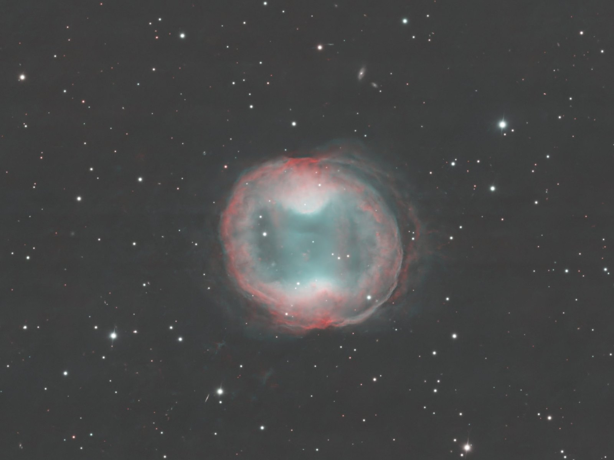

Pl. II · Deep sky · HOO palette · April 2026
PK 164+31.1, a planetary nebula
The planetary nebula PK 164+31.1 in the HOO palette, from the AstroCamp observatory.

PK 164+31.1, or Jones-Emberson 1, has hardly any literature of its own: no arXiv abstract names it1. It is a broad elliptical ring with two symmetric inner condensations; the brightest ones seem to have been ejected in opposite directions, perhaps at an early stage of collimation2. Its central star, a white dwarf of about 150,000 K3, shows no signs in TESS of a close companion4. From its Gaia parallax it lies at about 985 parsecs, some 3200 light years5, 3: twice the 1600 that popular-science sources repeat6. In my HOO image the ring and the two condensations can be recognised7, inf..
- Object
- PK 164+31.1 · Lynx
- Type
- Planetary nebula
- Palette
- HOO
- Site
- AstroCamp observatory
- Processed
- 24 Apr 2026
- Final size
- 6131 × 4049 px
References
- 1Search of the arXiv API, 12-11-2026: abs:"JnEr 1", abs:"Jones-Emberson" and abs:"PK 164+31.1" return 0 results. export.arxiv.org Database
- 2Phillips, J. P. & Ramos-Larios, G. (2010). “Spitzer mid-infrared observations of seven bipolar planetary nebulae”. MNRAS. arXiv:1004.0038 Published
- 3Csukai, A., Zijlstra, A. A., McDonald, I. & De Marco, O. (2025). “Central-star extinctions towards planetary nebulae”. MNRAS 543, 3035. arXiv:2509.10621 Published
- 4Aller, A., Lillo-Box, J. & Jones, D. (2024). “Planetary nebulae seen with TESS: New and revisited short-period binary central star candidates from Cycles 1 to 4”. A&A 690, A190. arXiv:2409.06332 Published
- 5Gaia DR3 (gaiadr3.gaia_source, source 936605992140011392) and distances from Bailer-Jones et al. 2021 (external.gaiaedr3_distance), TAP query of 12-11-2026. gea.esac.esa.int Database
- 6NASA, APOD of 24 Feb 2023, “Jones-Emberson 1”. science.nasa.gov Press release (outreach)
- 7Own data: this plate.
inf. marks our own inference, calculation or comparison, not published.